Become an Ethical Hacker Learning Path
- Managing incidents
- Creating security policies
- Protecting data
- The COBIT framework
- Conducting penetration testing
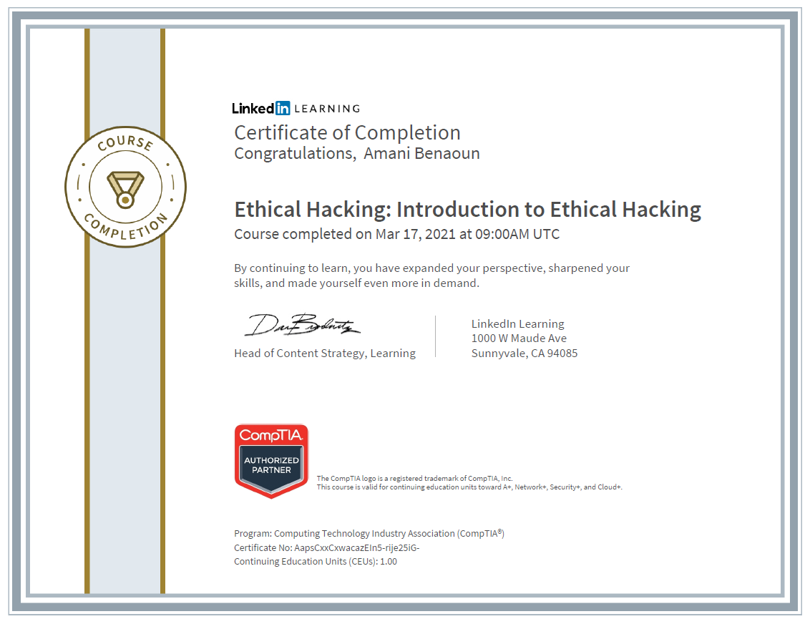
- Using competitive intelligence
- Hacking with search engines
- Using email for footprinting
- Getting social
- Mirroring websites
- Using Ping, Tracert, nslookup, and dig
- Taking footprinting countermeasures
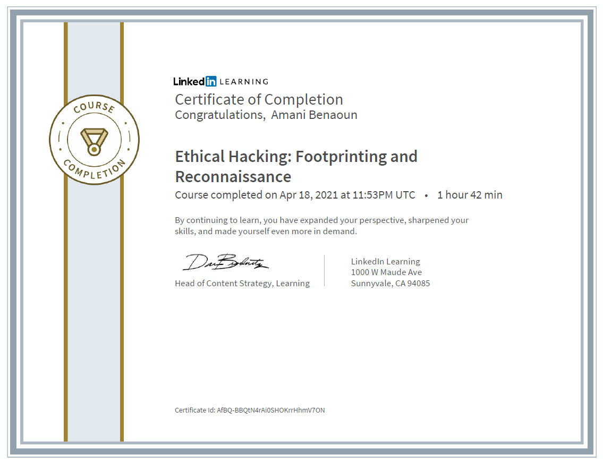
- Scanning overview
- Port scanning countermeasures
- Scanning and querying DNS
- Scanning with ICMP
- Mapping (or blueprinting) a network
- Scanning for vulnerabilities
- Using tools such as hping and NetScan
- Evading detection
- Concealing your network traffic
- Preventing tunneling
- Understanding NetBIOS, SMB, SAMBA, and RPC
- Profiling hosts
- Investigating interfaces
- Enumerating SMB
- Enumerating SNMP and RPC
- Enumerating the Internet
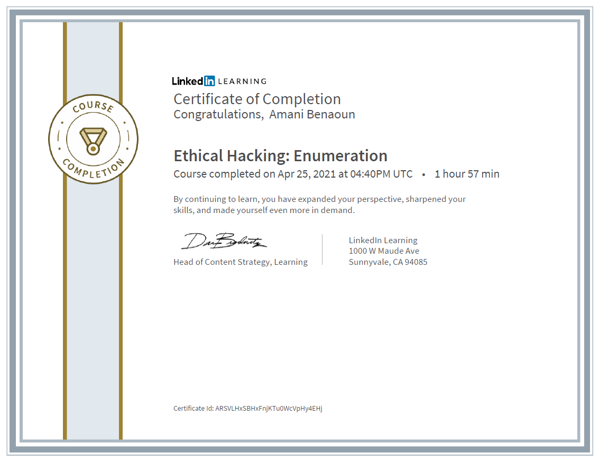
- Common causes of vulnerabilities
- Identifying and assessing vulnerabilities
- The Common Vulnerability Scoring System (CVSS)
- Outsourcing vulnerability analysis
- Leveraging Nikto and other vulnerability assessment tools
- Securing mobile devices
- Defending the LAN
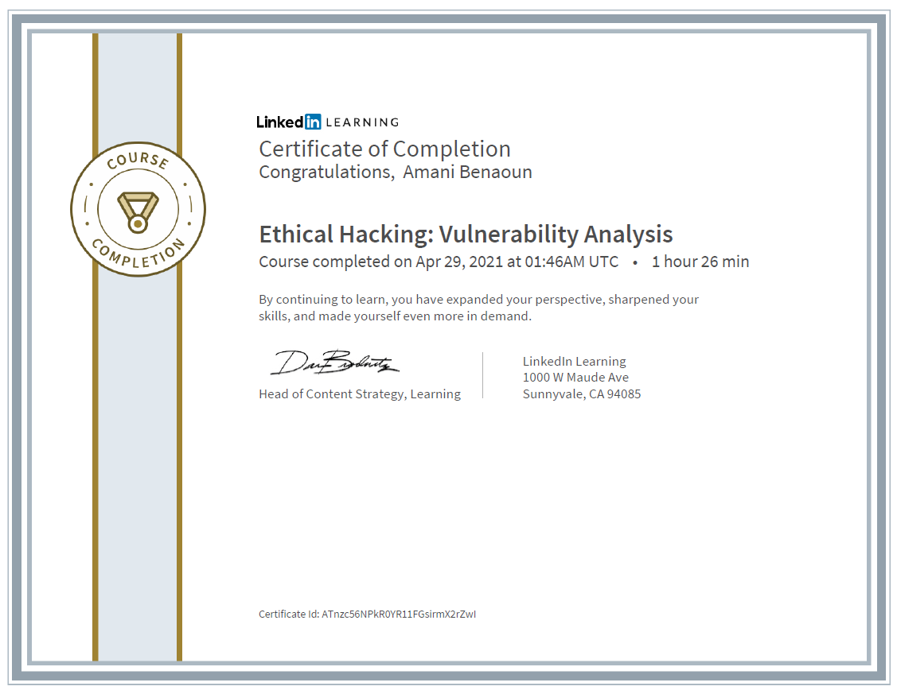
- Acquiring passwords
- Generating rainbow tables
- Defending against privilege escalation
- Understanding spyware
- Protecting against keylogging
- Detecting steganography
- How hackers cover their tracks
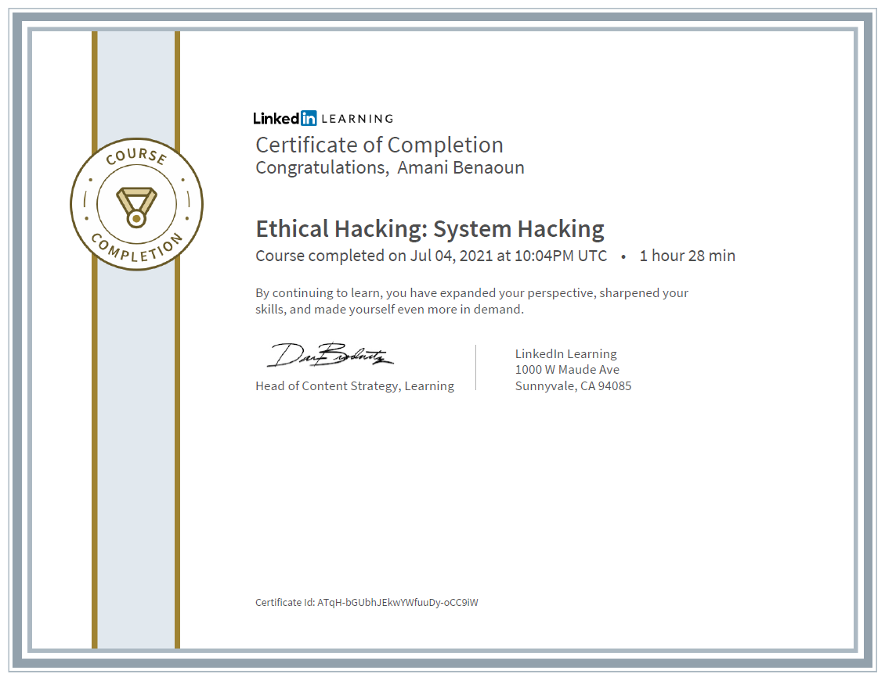
- Types of malware
- How malware works
- Automating malware with botnets
- Detecting malware
- Hiding malware
- Using cryptography in ransomware
- Reverse-engineering malware
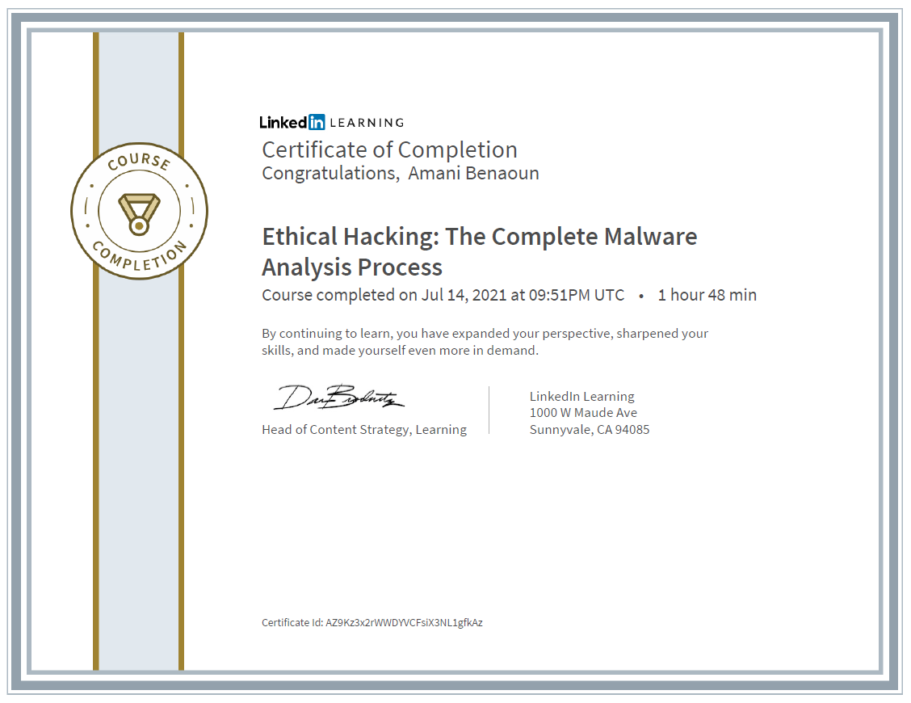
- Sniffing network traffic
- Passive vs. active attacks
- MAC and macof attacks
- Investigating DHCP attacks
- Detecting ARP and DNS spoofing
- Sniffing tools and techniques
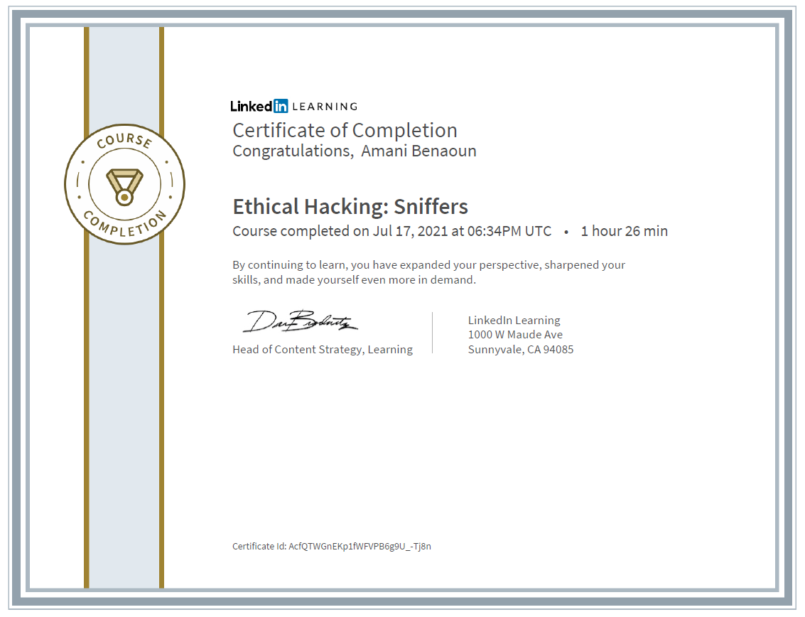
- Recognizing an attack
- Using charm, power, and influence
- Manipulating with social media
- Preventing insider attacks
- Stealing identities
- Pen testing with social engineering
- Taking countermeasures
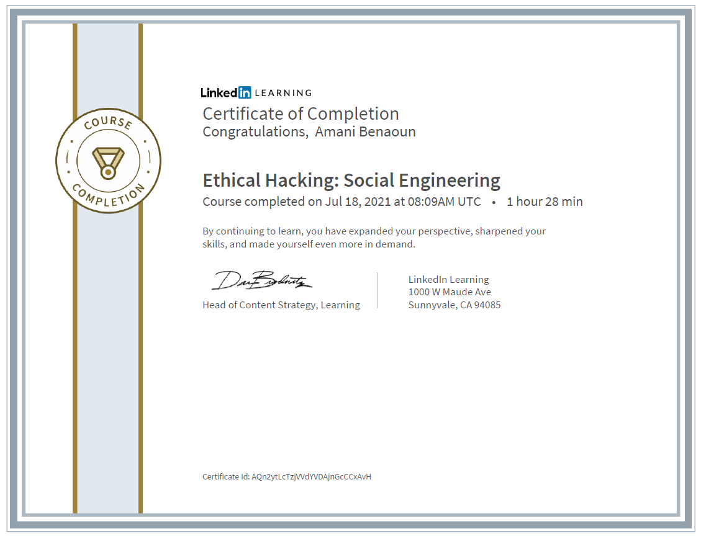
- TCP SYN, Smurf, and UDP flooding
- Deauthenticating a wireless host
- Flooding HTTP
- Using BlackEnergy
- Flooding a SIP server
- Detecting P2P attacks with PeerShark
- Defeating DoS attacks
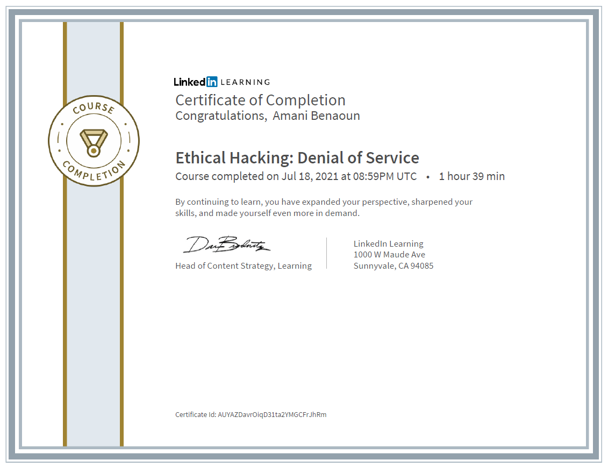
- Hijacking a network session
- Intercepting sessions
- Downgrading a session by stripping SSL
- Using ARP poisoning through Subterfuge
- Hijacking an HTTP session through cookies
- Using hijacking defense tools
- Service hijacking (DNS and SSH)
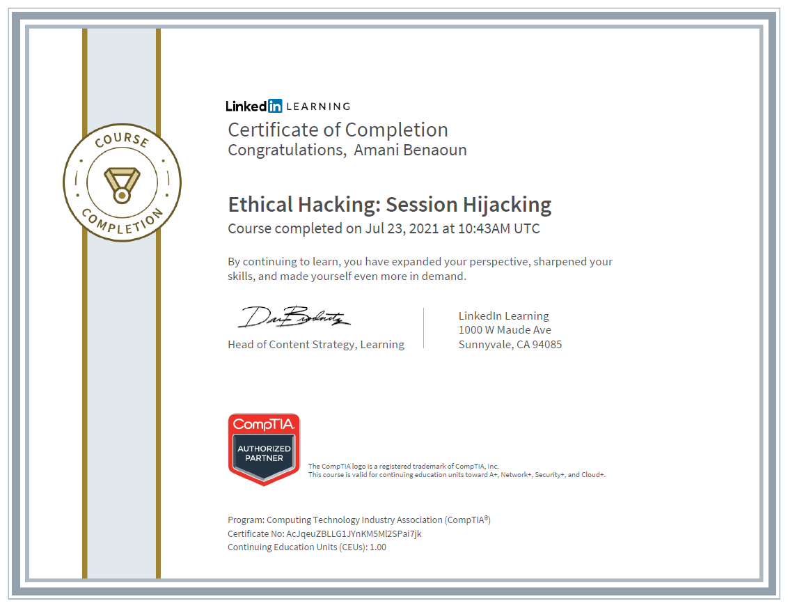
- Reviewing firewall logs
- Managing rules with Firewall Builder
- Installing GNS3
- How web application firewalls protect web servers
- Protecting API services with the WSO2 gateway
- Running the Cowrie honeypot
- Detecting intrusions with Security Onion
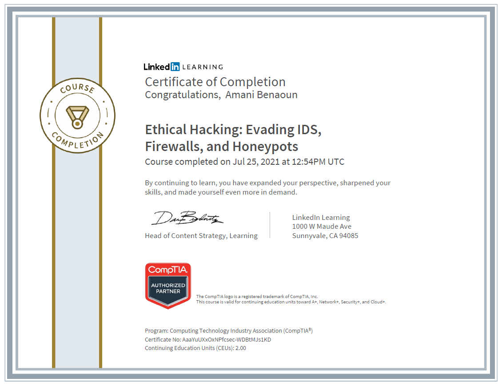
- Key elements of web-based applications
- Working with cookies
- Web testing with WebGoat and Burp Suite
- Running basic tests, such as fingerprinting web servers
- Advanced testing, including testing for SQL injections
- Configuring security
- Extracting WEP and network passwords
- Testing passwords
- Harvesting connections from rogue access points
- Attacking networks via Bluetooth
- Capturing wireless packets with Acrylic Wi-Fi
- Heat mapping with Ekahau
- Wi-Fi sniffing with Wireshark
- Testing the Internet of Things
- Statistic and dynamic analysis of mobile applications
- Testing on Android
- Analyzing Android applications
- Securing iOS applications
- Jailbreaking iOS for command-line access
- Analyzing iOS apps
- IoT technologies and protocols
- IoT communication models
- Common OWASP vulnerabilities
- Overcoming inherent IoT challenges
- Attacks occurring on IoT devices
- Methodologies used for hacking
- Securing IoT devices
- Symmetric and asymmetric encryption
- Cryptographic hashing
- How digital certificates work
- Public key infrastructure (PKI) components
- Protocols that use cryptography
- Common types of cryptographic attacks
- Common threats in cloud computing
- Managing cloud identities
- Using AI and ML to identify anomalies
- Pen testing in the context of cloud computing